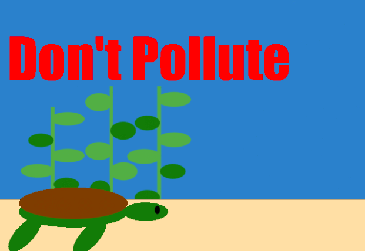
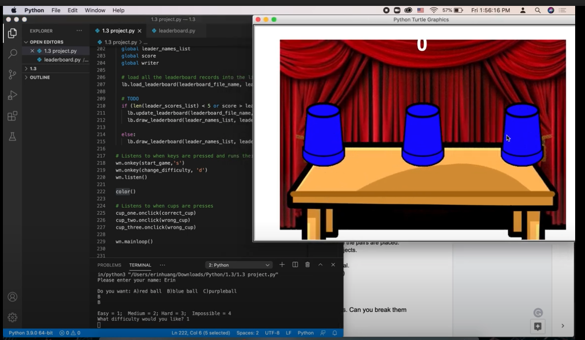

Home
Portfolio
About Me
⁂Portfolio Page⁂
1.1.9 Project

In our code, we started with a base containing the ocean, a layer of sand, and some seaweed. After this, there's a fish that swims across the screen. A plastic bag then floats down and gets eaten by a sea turtle that's also swimming by. The consumption of the plastic kills the turtle. This scene/code was created to show a message on what polluting can do to the environment./h1>
Code created using python turtle
1.2.5 Project

In our code, we added a galaxy base to set the space theme of the game. Then, we added aliens and rock turtles. Our idea was to have a timer and a score component. Along to this, the UFO can move around using keyboard control and the score increases when you “rescue," or collide with an alien.
1.3.1 Project

In our code, we used Wn.onclick function, for/if functions, and turtle movements to create a shell game using cups and a ball. In the scene, we placed the cups and ball on a table with a curtain in the background. It allows the the user to click on of the cups when moved around and guess which one the ball is placed under.
Scratch Project (Minion Brawl)
h1>
My group and I created a minion/fighting themed game where your goal is to collect coins and defeat enemies along the way. We used pre-made code blocks and statements to form out game's code. While playing, the user is encouraged to move foward (continuously to the right) and collecting coins by moving across them or jumping to collect them. By pressing the z or x key, the user is able to "kill" the incoming enemies.
Code created using Scratch